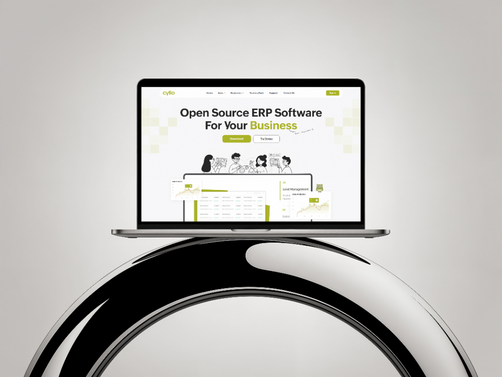
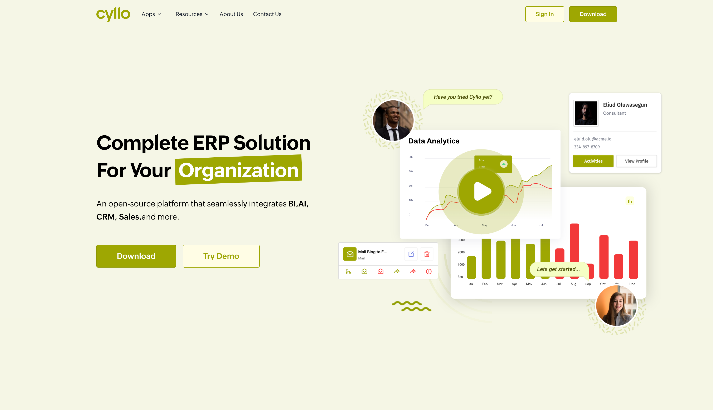
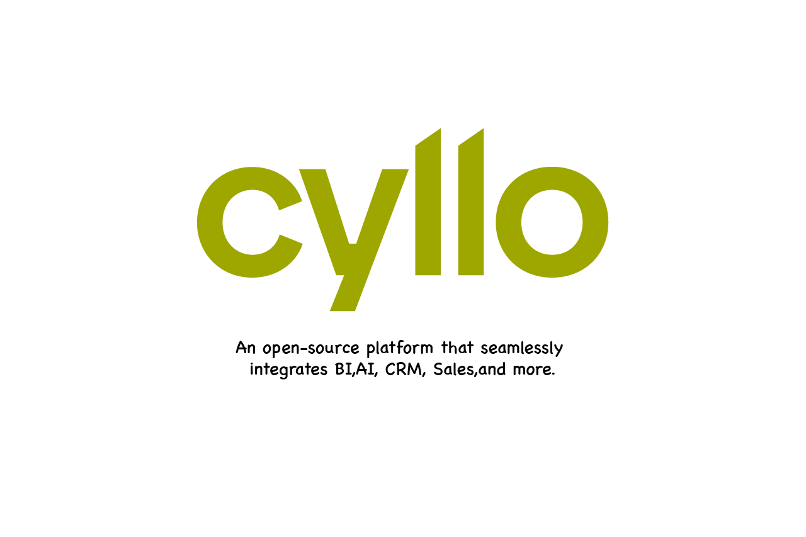
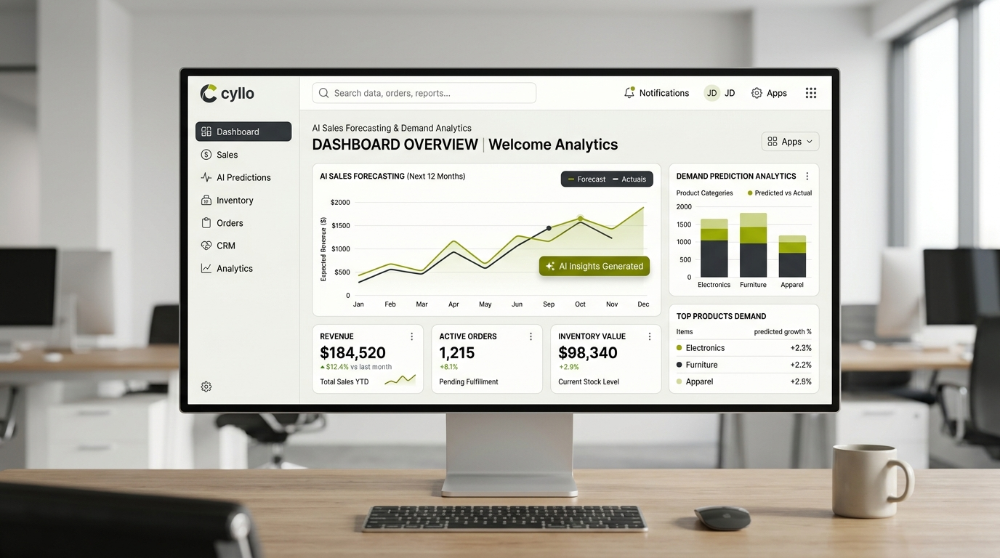

Cyllo
A connected open-source business ecosystem creating a modern digital experience for ERP platform modules, cloud infrastructure, and AI-assisted workflows.

Background
Unifying fragmented enterprise tools
Cyllo brings essential business operations—accounting, human capital, CRM, inventory, and supply chain—into one intelligent workspace. The goal was to remove steep onboarding hurdles typical of legacy ERP platforms without sacrificing data depth.
Lightweight yet powerful data tables
We designed modular workspaces with inline editing, batch actions, universal Command-K shortcuts, and conversational AI assistants for cash-flow forecasting and inventory demand replenishment.


Work Highlight
Consumer-grade polish for complex data systems
We established an end-to-end design language and comprehensive token system that scales effortlessly across both dense desktop data grids and the public brand web presence.
Cyllo successfully demonstrated that open-source enterprise software can deliver high-aesthetic consumer-grade elegance while driving productivity for global organizations.

Faced Challenges
Managing extreme data complexity while retaining visual calm
Building a modern ERP demands reconciling massive relational databases, financial ledgers, and multi-tenant architectures into an interface that feels clear, fast, and responsive.
Balancing Enterprise Depth with Visual Lightness
Enterprise accountants and inventory controllers process massive tabular reports daily. To prevent visual fatigue, we implemented customizable display density modes, pinned key totals, and inline cell editing that drastically reduces screen clutter.
Unifying Disconnected Enterprise Silos
Legacy ERP suites frequently trap users in rigid module silos. We architected a universal Command-K quick search, consistent breadcrumbs, and cross-module deep links that allow instant jumps between invoices, customer records, and purchase orders.
Contextual AI Assistance for Cash-Flow & Demand
Users are skeptical of opaque automated algorithms. We designed transparent contextual AI callouts that display exact forecasting reasoning and interactive scenario toggles directly beside financial ledger figures.
Bridging Open-Source Developers with Enterprise Buyers
The Cyllo brand needed to earn technical credibility among developers while inspiring confidence in corporate C-suite buyers. We designed a refined, typographic-led visual system that communicates stability, speed, and open extensibility.